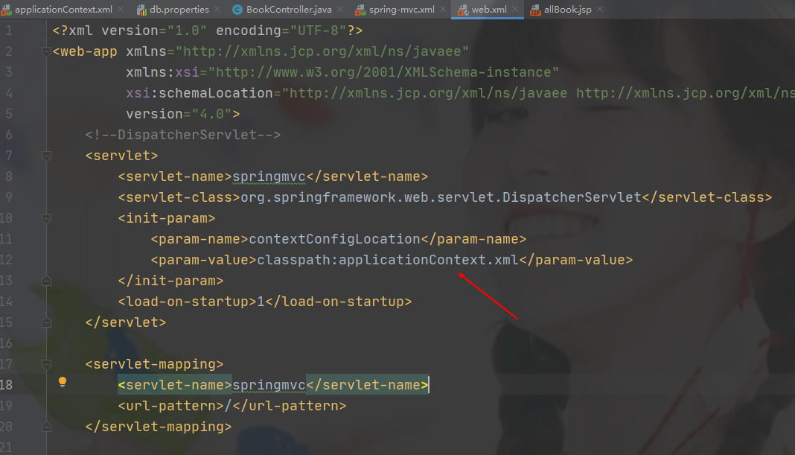
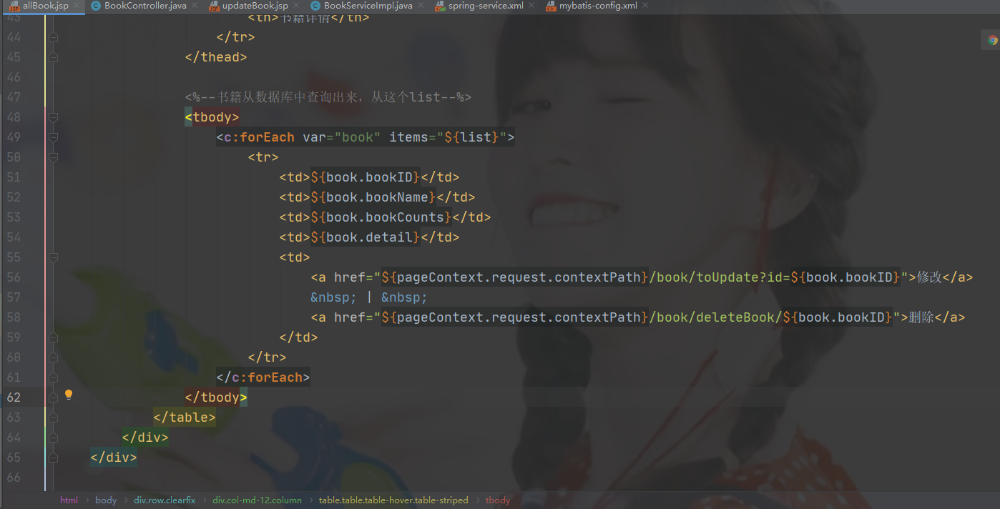
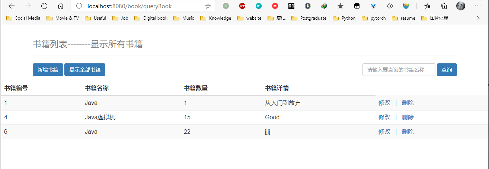

1、整合Mybatis层
新建普通Maven project
导入依赖 pom.xml
<!--依赖：junit, 数据库驱动，连接池，servlet，jsp，mybatis，mybatis-spring，spring --> <dependencies> <!--junit--> <dependency> <groupId>junit</groupId> <artifactId>junit</artifactId> <version>4.12</version> </dependency> <!--数据库驱动--> <dependency> <groupId>mysql</groupId> <artifactId>mysql-connector-java</artifactId> <version>5.1.47</version> </dependency> <!--数据库连接池 c3p0 dbcp--> <dependency> <groupId>com.mchange</groupId> <artifactId>c3p0</artifactId> <version>0.9.5.2</version> </dependency> <!--Servlet - jsp--> <dependency> <groupId>javax.servlet</groupId> <artifactId>servlet-api</artifactId> <version>2.5</version> </dependency> <dependency> <groupId>javax.servlet.jsp</groupId> <artifactId>jsp-api</artifactId> <version>2.2</version> </dependency> <dependency> <groupId>javax.servlet</groupId> <artifactId>jstl</artifactId> <version>1.2</version> </dependency> <!--Mybatis--> <dependency> <groupId>org.mybatis</groupId> <artifactId>mybatis</artifactId> <version>3.5.2</version> </dependency> <dependency> <groupId>org.mybatis</groupId> <artifactId>mybatis-spring</artifactId> <version>2.0.2</version> </dependency> <!--Spring--> <dependency> <groupId>org.springframework</groupId> <artifactId>spring-webmvc</artifactId> <version>5.1.9.RELEASE</version> </dependency> <dependency> <groupId>org.springframework</groupId> <artifactId>spring-jdbc</artifactId> <version>5.1.9.RELEASE</version> </dependency> <!-- Lombok --> <dependency> <groupId>org.projectlombok</groupId> <artifactId>lombok</artifactId> <version>1.18.12</version> <scope>provided</scope> </dependency> </dependencies> <!--资源过滤问题--> <build> <resources> <resource> <directory>src/main/java</directory> <includes> <include>**/*.properties</include> <include>**/*.xml</include> </includes> <filtering>false</filtering> </resource> <resource> <directory>src/main/resources</directory> <includes> <include>**/*.properties</include> <include>**/*.xml</include> </includes> <filtering>false</filtering> </resource> </resources> </build>建包，项目结构，连接数据库
新建resources文件
db.properties
driver=com.mysql.jdbc.Driver # 如果使用的是MySQL 8.0+，增加一个时区的配置; &serverTimezone=Asia/Shanghai url=jdbc:mysql://localhost:3306/ssmbuild?useSSL=true&useUnicode=true&characterEncoding=utf-8 username=root password=123456mybatis-config.xml
<?xml version="1.0" encoding="UTF-8" ?> <!DOCTYPE configuration PUBLIC "-//mybatis.org//DTD Config 3.0//EN" "http://mybatis.org/dtd/mybatis-3-config.dtd"> <configuration> <!--配置数据源，交给Spring去做--> <typeAliases> <package name="com.jiangzhe.pojo"/> </typeAliases> <mappers> <mapper class="com.jiangzhe.dao.BookMapper"/> </mappers> </configuration>
实体类pojo
Books
@Data @AllArgsConstructor @NoArgsConstructor public class Books { private int bookID; private String bookName; private int bookCounts; private String detail; }
Dao层
BookMapper接口
public interface BookMapper { //增加一本书 int addBook(Books books); //删除一本书 int deleteBookById(@Param("bookId") int id); //更新一本书 int updateBook(Books books); //查询一本书 Books queryBookById(int id); //查询全部的书 List<Books> queryAllBooks(); }BookMapper.xml
<?xml version="1.0" encoding="UTF-8" ?> <!DOCTYPE mapper PUBLIC "-//mybatis.org//DTD Config 3.0//EN" "http://mybatis.org/dtd/mybatis-3-mapper.dtd"> <mapper namespace="com.jiangzhe.dao.BookMapper"> <insert id="addBook" parameterType="Books"> insert into ssmbuild.books (bookName, bookCounts, detail) values (#{bookName},#{bookCounts}.#{detail}); </insert>
<delete id="deleteBookById" parameterType="int">
delete from ssmbuild.books where bookID = #{bookId}
</delete>
<update id="updateBook" parameterType="Books">
update ssmbuild.books
set bookName=#{bookName}, bookCounts=#{bookCounts},detail=#{detail}
where bookID = #{bookID}
</update>
<select id="queryBookById" parameterType="Books">
select * from ssmbuild.books
where bookID = #{bookID}
</select>
<select id="queryAllBooks" parameterType="Books">
select * from ssmbuild.books
</select>service层
BookService接口
public interface BookService { //增加一本书 int addBook(Books books); //删除一本书 int deleteBookById(int id); //更新一本书 int updateBook(Books books); //查询一本书 Books queryBookById(int id); //查询全部的书 List<Books> queryAllBooks(); }BookServiceImpl 接口实现类
public class BookServiceImpl implements BookService{ //service层调用dao层：组合Dao private BookMapper bookMapper; public void setBookMapper(BookMapper bookMapper) { this.bookMapper = bookMapper; } public int addBook(Books books) { return bookMapper.addBook(books); } public int deleteBookById(int id) { return bookMapper.deleteBookById(id); } public int updateBook(Books books) { return bookMapper.updateBook(books); } public Books queryBookById(int id) { return bookMapper.queryBookById(id); } public List<Books> queryAllBooks() { return bookMapper.queryAllBooks(); } }
2、整合Spring层
在resources中新建spring-dao.xml
<?xml version="1.0" encoding="UTF-8"?> <beans xmlns="http://www.springframework.org/schema/beans" xmlns:xsi="http://www.w3.org/2001/XMLSchema-instance" xmlns:context="http://www.springframework.org/schema/context" xsi:schemaLocation="http://www.springframework.org/schema/beans https://www.springframework.org/schema/beans/spring-beans.xsd http://www.springframework.org/schema/context https://www.springframework.org/schema/aop/spring-context.xsd"> <!--1.关联数据库配置文件--> <context:property-placeholder location="classpath:db.properties"/> <!--2.连接池 dbcp:半自动化操作，不能自动连接 c3p0:自动化操作，（自动化的加载配置文件，并且可以自动设置到对象中） druid: hikari: --> <bean id="dataSource" class="com.mchange.v2.c3p0.ComboPooledDataSource"> <property name="driverClass" value="${jdbc.driver}"/> <property name="jdbcUrl" value="${jdbc.url}"/> <property name="user" value="${jdbc.username}"/> <property name="password" value="${jdbc.password}"/> <!--c3p0连接池的私有属性--> <property name="maxPoolSize" value="30"/> <property name="minPoolSize" value="10"/> <!--关闭连接后不自动commit--> <property name="autoCommitOnClose" value="false"/> <!--获取连接超时时间--> <property name="checkoutTimeout" value="10000"/> <!--当获取连接失败重试次数--> <property name="acquireRetryAttempts" value="2"/> </bean> <!--3.sqlSessionFactory--> <bean id="sqlSessionFasctory" class="org.mybatis.spring.SqlSessionFactoryBean"> <property name="dataSource" ref="dataSource"/> <!--绑定Mybatis的配置文件--> <property name="configLocation" value="classpath:mybatis-config.xml"/> </bean> <!--配置dao接口扫描包，动态实现了Dao接口可以注入到Spring容器中 可以替换之前的BookMapperImpl类 --> <bean class="org.mybatis.spring.mapper.MapperScannerConfigurer"> <!--注入sqlSessionFactory--> <property name="sqlSessionFactoryBeanName" value="sqlSessionFactory"/> <!--要扫描的包--> <property name="basePackage" value="com.jiangzhe.dao"/> </bean> </beans>在resources中新建spring-service.xml文件
<?xml version="1.0" encoding="UTF-8"?> <beans xmlns="http://www.springframework.org/schema/beans" xmlns:xsi="http://www.w3.org/2001/XMLSchema-instance" xmlns:context="http://www.springframework.org/schema/context" xsi:schemaLocation="http://www.springframework.org/schema/beans https://www.springframework.org/schema/beans/spring-beans.xsd http://www.springframework.org/schema/context https://www.springframework.org/schema/context/spring-context.xsd"> <!--1.扫描service下的包--> <context:component-scan base-package="com.jiangzhe.service"/> <!--2.将我们的所有业务类，注入到Spring，可以通过配置，或者注解实现--> <bean id="BookServiceImpl" class="com.jiangzhe.service.BookServiceImpl"> <property name="bookMapper" ref="bookMapper"/> </bean> <!--3.声明式事务配置--> <bean id="TransactionManager" class="org.springframework.jdbc.datasource.DataSourceTransactionManager"> <!--注入数据源--> <property name="dataSource" ref="dataSource"/> </bean> <!--4.aop事务支持--> </beans>在applicationContext.xml中import resource
<?xml version="1.0" encoding="UTF-8"?> <beans xmlns="http://www.springframework.org/schema/beans" xmlns:xsi="http://www.w3.org/2001/XMLSchema-instance" xsi:schemaLocation="http://www.springframework.org/schema/beans https://www.springframework.org/schema/beans/spring-beans.xsd">
<import resource="classpath:spring-dao.xml"/>
<import resource="classpath:spring-service.xml"/>在BookServiceImpl类中加入注解@Service以及@AutoWired
@Service public class BookServiceImpl implements BookService{ //service层调用dao层：组合Dao @Autowired private BookMapper bookMapper; public void setBookMapper(BookMapper bookMapper) { this.bookMapper = bookMapper; } public int addBook(Books books) { return bookMapper.addBook(books); } public int deleteBookById(int id) { return bookMapper.deleteBookById(id); } public int updateBook(Books books) { return bookMapper.updateBook(books); } public Books queryBookById(int id) { return bookMapper.queryBookById(id); } public List<Books> queryAllBooks() { return bookMapper.queryAllBooks(); } }
注意：这几个spring的xml文件需要绑定到一起。
3、整合SpringMVC层
添加web 框架支持
web.xml中配置 DispatcherServlet,乱码过滤以及Session
<?xml version="1.0" encoding="UTF-8"?> <web-app xmlns="http://xmlns.jcp.org/xml/ns/javaee" xmlns:xsi="http://www.w3.org/2001/XMLSchema-instance" xsi:schemaLocation="http://xmlns.jcp.org/xml/ns/javaee http://xmlns.jcp.org/xml/ns/javaee/web-app_4_0.xsd" version="4.0"> <!--DispatcherServlet--> <servlet> <servlet-name>springmvc</servlet-name> <servlet-class>org.springframework.web.servlet.DispatcherServlet</servlet-class> <init-param> <param-name>contextConfigLocation</param-name> <param-value>classpath:spring-mvc.xml</param-value> </init-param> <load-on-startup>1</load-on-startup> </servlet> <servlet-mapping> <servlet-name>springmvc</servlet-name> <url-pattern>/</url-pattern> </servlet-mapping> <!--乱码过滤--> <filter> <filter-name>encodingFilter</filter-name> <filter-class>org.springframework.web.filter.CharacterEncodingFilter</filter-class> <init-param> <param-name>encoding</param-name> <param-value>utf-8</param-value> </init-param> </filter> <filter-mapping> <filter-name>encodingFilter</filter-name> <url-pattern>/*</url-pattern> </filter-mapping> <!--Session--> <session-config> <session-timeout>15</session-timeout> </session-config> </web-app>创建spring-mvc.xml文件
<?xml version="1.0" encoding="UTF-8"?> <beans xmlns="http://www.springframework.org/schema/beans" xmlns:xsi="http://www.w3.org/2001/XMLSchema-instance" xmlns:mvc="http://www.springframework.org/schema/mvc" xmlns:context="http://www.springframework.org/schema/context" xsi:schemaLocation="http://www.springframework.org/schema/beans https://www.springframework.org/schema/beans/spring-beans.xsd http://www.springframework.org/schema/mvc http://www.springframework.org/schema/cache/spring-mvc.xsd http://www.springframework.org/schema/context https://www.springframework.org/schema/context/spring-context.xsd"> <!--1.注解驱动--> <mvc:annotation-driven/> <!--2.静态资源过滤--> <mvc:default-servlet-handler/> <!--3.扫描包：controller--> <context:component-scan base-package="com.jiangzhe.controller"/> <!--4.视图解析器--> <bean class="org.springframework.web.servlet.view.InternalResourceViewResolver"> <property name="prefix" value="/WEB-INF/jsp/"/> <property name="suffix" value=".jsp"/> </bean> </beans>添加到applicationContext.xml中
<?xml version="1.0" encoding="UTF-8"?> <beans xmlns="http://www.springframework.org/schema/beans" xmlns:xsi="http://www.w3.org/2001/XMLSchema-instance" xsi:schemaLocation="http://www.springframework.org/schema/beans https://www.springframework.org/schema/beans/spring-beans.xsd">
<import resource="classpath:spring-dao.xml"/>
<import resource="classpath:spring-service.xml"/>
<import resource="classpath:spring-mvc.xml"/>4、整合过程出现的错误：
拼写错误，sqlSessionFactory拼写出错
WEB-INF下没有lib目录
spring-dao.xml 配置文件头部单词有错误的，要检查好几个地方是否一致。
db.properties需要加上jdbc.前缀
jdbc.driver=com.mysql.jdbc.Driver # 如果使用的是MySQL 8.0+，增加一个时区的配置; &serverTimezone=Asia/Shanghai jdbc.url=jdbc:mysql://localhost:3306/ssmbuild?useSSL=true&useUnicode=true&characterEncoding=utf-8 jdbc.username=root jdbc.password=123456
spring-dao.xml中c3p0连接池要一致
<bean id="dataSource" class="com.mchange.v2.c3p0.ComboPooledDataSource"> <property name="driverClass" value="${jdbc.driver}"/> <property name="jdbcUrl" value="${jdbc.url}"/> <property name="user" value="${jdbc.username}"/> <property name="password" value="${jdbc.password}"/> <!--c3p0连接池的私有属性--> <property name="maxPoolSize" value="10"/> <property name="minPoolSize" value="3"/> <!--关闭连接后不自动commit--> <property name="autoCommitOnClose" value="false"/> <!--获取连接超时时间--> <property name="checkoutTimeout" value="10000"/> <!--当获取连接失败重试次数--> <property name="acquireRetryAttempts" value="2"/> </bean>BookMapper.xml有两个个查询语句的resultType没写
<select id="queryBookById" parameterType="Books" resultType="Books"> select * from ssmbuild.books where bookID = #{bookID} </select> <select id="queryAllBooks" parameterType="Books" resultType="Books"> select * from ssmbuild.books </select>web.xml中DispatcherServlet导入的是mvc的配置，mvc配置访问不到service配置，所以替换成为applicationContext.xml
<?xml version="1.0" encoding="UTF-8"?> <web-app xmlns="http://xmlns.jcp.org/xml/ns/javaee" xmlns:xsi="http://www.w3.org/2001/XMLSchema-instance" xsi:schemaLocation="http://xmlns.jcp.org/xml/ns/javaee http://xmlns.jcp.org/xml/ns/javaee/web-app_4_0.xsd" version="4.0"> <!--DispatcherServlet--> <servlet> <servlet-name>springmvc</servlet-name> <servlet-class>org.springframework.web.servlet.DispatcherServlet</servlet-class> <init-param> <param-name>contextConfigLocation</param-name> <param-value>classpath:applicationContext.xml</param-value> </init-param> <load-on-startup>1</load-on-startup> </servlet> <servlet-mapping> <servlet-name>springmvc</servlet-name> <url-pattern>/</url-pattern> </servlet-mapping> <!--乱码过滤--> <filter> <filter-name>encodingFilter</filter-name> <filter-class>org.springframework.web.filter.CharacterEncodingFilter</filter-class> <init-param> <param-name>encoding</param-name> <param-value>utf-8</param-value> </init-param> </filter> <filter-mapping> <filter-name>encodingFilter</filter-name> <url-pattern>/*</url-pattern> </filter-mapping> <!--Session--> <session-config> <session-timeout>15</session-timeout> </session-config> </web-app>
BookController类中忘记写@RequestMapping
5、查询书籍功能
index.jsp
<%@ page contenttype="text/html;charset=UTF-8" language="java" %>首页 进入书籍页面
allBook.jsp
<%@ taglib prefix="c" uri="http://java.sun.com/jsp/jstl/core" %> <%@ page contenttype="text/html;charset=UTF-8" language="java" %>书籍展示页面 <%--导入bootstrap的模板--%>书籍列表--------显示所有书籍
书籍编号 书籍名称 书籍数量 书籍详情 ${book.bookID} ${book.bookName} ${book.bookCounts} ${book.detail} 查询页面显示localhost:8080/book/allBook
6、增加书籍功能
allBook.jsp页面中增加新增书籍按钮 http://localhost:8080/book/allBook， 点击该按钮可以跳转到http://localhost:8080/book/toAddBook
<%--toaddbook--%> 新增书籍BookController类中增加跳转页面的方法,使其可以跳转到 http://localhost:8080/book/toAddBook
//跳转到增加书籍页面 @RequestMapping("/toAddBook") public String toAddPage(){ return "addBook"; }在WEB-INF/jsp/ 新增addBook.jsp，这个页面作用是输入书籍的信息然后点击按钮添加到数据库
<%@ page contenttype="text/html;charset=UTF-8" language="java" %>增加书籍页面 <%--导入bootstrap的模板--%>新增书籍页面
输入了 书籍名称：Java虚拟机， 书籍数量：1， 书籍描述：Good 之后，点击添加按钮。
在BookController类中增加添加书籍的请求
//添加书籍的请求 @RequestMapping("/addBook") public String addBook(Books books){ System.out.println("addBook==>"+books); bookService.addBook(books); return "redirect:/book/allBook";//重定向到我们的@RequestMapping("/allBook")请求； }
点击添加按钮之后，重定向到http://localhost:8080/book/allBook，并显示所有书籍。
7、修改删除书籍功能
在allBook.jsp页面中加入 修改 与 删除 的超链接，点击修改会跳转到http://localhost:8080/book/toUpdate?id=
修改 | 删除 需要一个/toUpdate的操作，所以在BookController类中加入跳转到修改书籍页面的方法
//跳转到修改书籍页面 @RequestMapping("/toUpdate") public String toUpdatePage(int id,Model model){ Books books = bookService.queryBookById(id); model.addAttribute("QBooks",books); return "updateBook"; }需要一个updateBook页面，在WEB-INF/jsp/ 下新建updateBook.jsp
<%@ page contenttype="text/html;charset=UTF-8" language="java" %>修改书籍 <%--导入bootstrap的模板--%>修改书籍页面
点击修改按钮会跳转到localhost:8080/book/updateBook,所以需要在BookController类中新增方法
//修改书籍 @RequestMapping("/updateBook") public String updateBook(Books books){ System.out.println("updateBook===>"+books); bookService.updateBook(books); return "redirect:/book/allBook"; }修改完之后/book/updateBook重定向到首页/book/allBook
删除操作，修改allBook页面的超链接
修改 | 删除 
在BookController中新增删除方法
//删除书籍 //RestFull风格 @RequestMapping("/deleteBook/{bookId}") public String deleteBook(@PathVariable("bookId") int id){ bookService.deleteBookById(id); return "redirect:/book/allBook"; }
8、新增根据书名查询功能
在allBook.jsp中写入表单
<%--查询书籍--%>在BookMapper接口中新增查询方法
//通过书名查询 List<Books> queryBookByName(@Param("bookName")String bookName);在BookMapper.xml中新增SQL语句, 模糊查询
<select id="queryBookByName" resultType="Books"> select * from books where bookName like concat('%',#{bookName},'%'); </select>在BookService接口中新增查询接口
//通过书名查询 List<Books> queryBookByName(String bookName);在BookServiceImpl实现类中新增查询的方法
public List<Books> queryBookByName(String bookName) { return bookMapper.queryBookByName(bookName); }在BookController类中加入查询的方法
//查询书籍 @RequestMapping("/queryBook") public String queryBook(String queryBookName, Model model){ List<Books> list = bookService.queryBookByName(queryBookName); model.addAttribute("list",list); return "allBook"; }
效果展示：
查询虚拟机：
查询Java：
